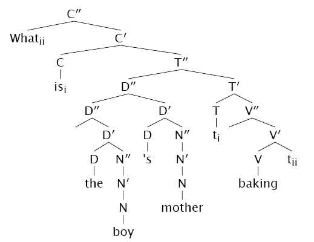
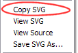

Note: This code has been superceded by SVG Tree Drawer. As with the code, the writeup here is five years old, and technology has changes significantly since then. This page is here for historical purposes.
This software consists of an XSLT stylesheet and a recursive algorithm in ECMAScript that create dynamic SVG images of tree data structures. It is intended for syntacticians since drawing trees is a very common activity in Linguistics and they quickly become tiresome and tedious. The following image is a representation of the sentence “What is the boy's mother baking?”:
The stylesheet can also be adapted to convert MathML into an expression tree. The following is of the expression a * x + b:
The original XML document was translated into SVG by use of an XSLT stylesheet. I wrote a recursive algorithm in Javascript to do all the work of positioning the nodes and drawing the connecting branches. There is a specific document structure for the translated SVG image which the algorithm traverses via the DOM. The document structure is as follows:
<?xml-stylesheet href="style.css" type="text/css"?>
<svg onload="init()" xmlns="http://www.w3.org/2000/svg"
xmlns:xlink="http://www.w3.org/1999/xlink">
<script type="text/ecmascript" xlink:href="code.js"/>
<g><!-- root node -->
<text>nodeLabel</text>
<line/>
<g><!-- parent node -->
<text>childNodeLabel</text>
<line/>
<g>
<!-- more text and line elements with an
optional g element for more children -->
</g>
</g>
<g><!-- leaf node -->
<text>leafNodeLabel</text>
<line/>
</g>
<!-- more siblings (more g elements) -->
</g>
</svg>
Each node consists of a g element, with child text and line elements
and then a variable number of additional g elements in the same format: a recursive definition.
Note that the leaf nodes must not have g elements because they are only for containing children, and leaf nodes have no children.
 There are two known ways to rasterize SVG images. The first is with the Adobe SVG Viewer; when viewing the SVG image, open the context menu and select "Copy SVG". Thereafter, open a photo editing application and paste the image into a new document. The second way is to use Apache's Batik Rasterizer; the following command can be used to rasterize an image using Batik:
java -jar batik-rasterizer.jar -onload tree.svg
The code is released under the GPL. Adapt one of XSLT stylesheets in order to convert your source XML document into the SVG element structure specified above.